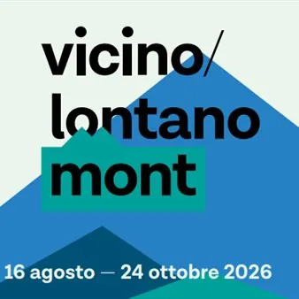

sab 3 ott · dalle 17:30
Vicino/Lontano Mont 6° Edizione
"Toccare la luce" parole e musica in ricordo di Pierluigi Cappello con CRISTINA MAURO, STEFANO MONTELLO introduce FABIO PAOLINI in collaborazione con associazione culturale Scras, associazione culturale Pierluigi Cappello, Leggimontagna. Il tema della conversazione in parole e…
 Indicazioni
Indicazioni
- Costi e prenotazioni
- Costo non indicato · Prenotazione non indicata
- Programma
- Programma da verificare. Apri la fonte ufficiale per orari e possibili aggiornamenti.
- In caso di maltempo
- Nessuna indicazione specifica pubblicata.
- Note
- Acquisito automaticamente dalla fonte.
L’EVENTO
Descrizione completa
"Toccare la luce" parole e musica in ricordo di Pierluigi Cappello con CRISTINA MAURO, STEFANO MONTELLO introduce FABIO PAOLINI in collaborazione con associazione culturale Scras, associazione culturale Pierluigi Cappello, Leggimontagna. Il tema della conversazione in parole e musica è la figura di Pierluigi Cappello, nato a Chiusaforte. A questo luogo, ai suoi abitanti, ai tanti ricordi di un tempo innocente e felice il poeta è sempre rimasto legato. Un mondo mitizzato, fonte di inesauribile ispirazione, cui ha dedicato poesie di rara intensità. Il 2027 cadrà la ricorrenza del decennale dalla prematura scomparsa del poeta e Stefano Montello, amico storico di Cappello, e Cristina Mauro, amica e ispiratrice di alcuni dei suoi versi, vogliono ricordarne la figura attraverso riflessioni, aneddoti, letture e l’esecuzione di brani musicali a lui dedicati o che Pierluigi ha scritto per il gruppo musicale FLK. CRISTINA MAURO Compositrice e interprete. Tra i fondatori del gruppo friulano FLK, collabora con il direttore d’orchestra e compositore Valter Sivilotti che ha arrangiato tutti i brani del suo primo disco da solista, Incjant , all’interno del quale reinterpreta, in lingua friulana, artisti di levatura internazionale come Bjork, Brel, Cesaria Evora, Silvio Rodriguez e molti altri. Nel 2007 si è aggiudicata il premio per la migliore composizione al concorso “Bianca D’Aponte” con il brano Se il nero contenuto nel disco degli FLK Dancing Calipso . Da molti anni collabora con lo scrittore Stefano Montello, per il quale ha composto la colonna sonora degli spettacoli teatrali in lingua friulana L’ort e Jerbatis . STEFANO MONTELLO Scrittore, musicista e contadino sociale. ha collaborato con artisti provenienti dal jazz, dal folk e dalla musica d’autore. È co-fondatore del gruppo friulano FLK. Ha pubblicato, tra gli altri: Manuale ragionato per la coltivazione dell’orto con la prefazione di Pierluigi Cappello (Forum 2014); L’albero capovolto (Bottega Errante 2016); Nuviçute mê e sûr (Samuele Editore 2016), una traduzione in lingua friulana del Cantico dei Cantici, Premio di poesia San Vito 2016; Il tempo delle erbacce (Forum 2021), Premio Speciale della Giuria alla 25° edizione del premio Nazionale “Parco della Majella”; e il romanzo Gli anni di Camel Suite (Forum 2024). FABIO PAOLINI Guida naturalistica, tra i fondatori del gruppo teatrale Le Clape di Scluse, da cui è nata la cooperativa La Chiusa. Ispiratore del progetto di accoglienza cicloturistica e culturale della Stazione di Chiusaforte. È autore di guide escursionistiche dedicate alle Alpi e Prealpi Giulie. È appena uscita Val Raccolana e Sella Nevea (Guarnerio/La Chiusa Edizioni, 2026).
IL PROGRAMMA
Programma e orari
Appuntamenti raccolti dalle fonti elencate. Dove manca un orario, non è ancora disponibile in questa scheda.
Programma pubblicato
- Dal 2026-10-03 al 2026-10-03
INFORMAZIONI UTILI
Prima di partire
- Controllare la fonte prima di partire.
ORGANIZZAZIONE